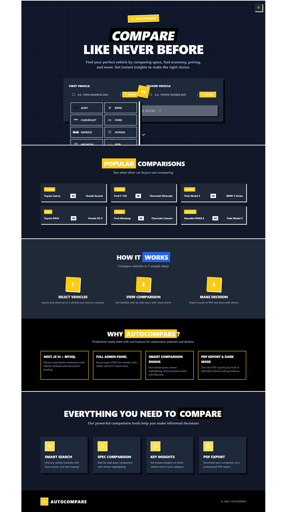
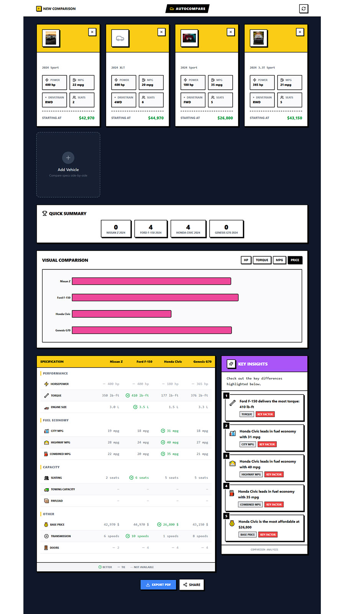
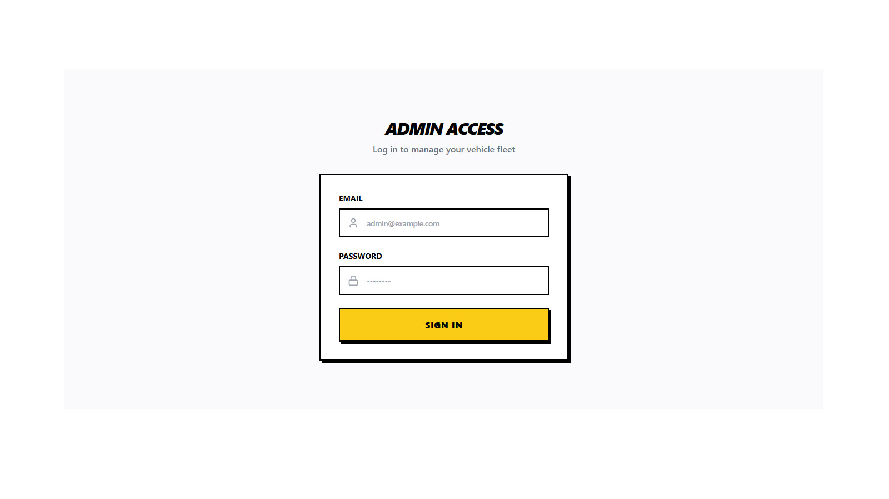

Modern JavaScript web application that lets your users compare vehicles side-by-side,
visualize specs with charts, and manage a full vehicle database from a beautiful admin panel.
What your visitors see when they compare vehicles.

Landing page with vehicle search and dark / light toggle.

Side-by-side comparison with quick stats and spec table.
Landing & Search
Neo‑brutalism landing page with powerful search that lets the user pick vehicles using
fuzzy search and smart suggestions. Fully responsive and optimized for desktop and mobile.
Search by make / model / year
Client-side comparison store (Zustand)
Instant navigation to comparison view
Comparison View
Side‑by‑side comparison layout with quick stats, spec table and visual charts. Highlighted
winners per category help users understand differences in seconds.
Up to 4 vehicles at once
Performance, fuel and capacity sections
Export comparison as PDF report
Dark Mode
Built‑in light / dark theme toggle powered by a small ThemeContext with localStorage
persistence. Works on all pages including the admin panel.
CSS variables for both themes
No layout shift or flash of wrong theme
One switch for the whole application
Admin Dashboard
Manage the full vehicle catalog with a clean, focused interface.

Vehicle table with bulk actions, export and import tools.Same admin dashboard in dark mode using the built-in theme switcher.
Fleet Manager
Table‑based dashboard for all vehicles with image, specs, price and quick actions.
Includes bulk selection and delete confirmation modals.
Search by make or model
CSV export of the current database
Soft neo‑brutalism UI with bold accents
Add & Edit Forms
Structured two‑column forms for basic and technical specs. Validation is done on the
server via Next.js API routes and MySQL.
Normalized make / model naming
Image URL with brand‑logo fallback
Reusable form layout for add / edit
CSV Import
Import hundreds of vehicles in one go using a simple CSV format. Includes a small
preview table and error summary so the admin knows exactly what happened.